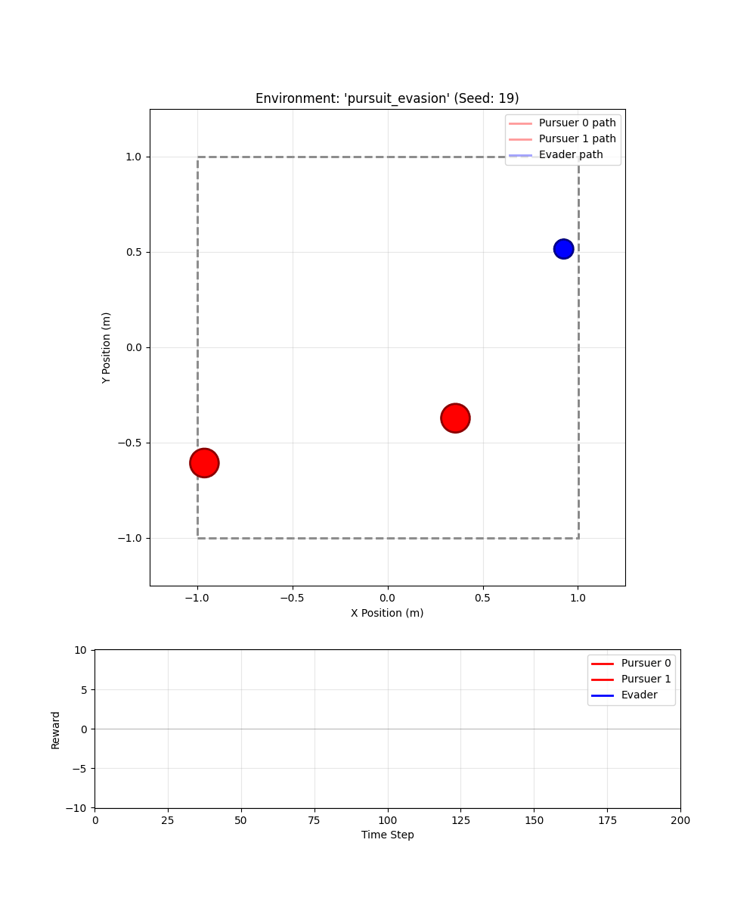
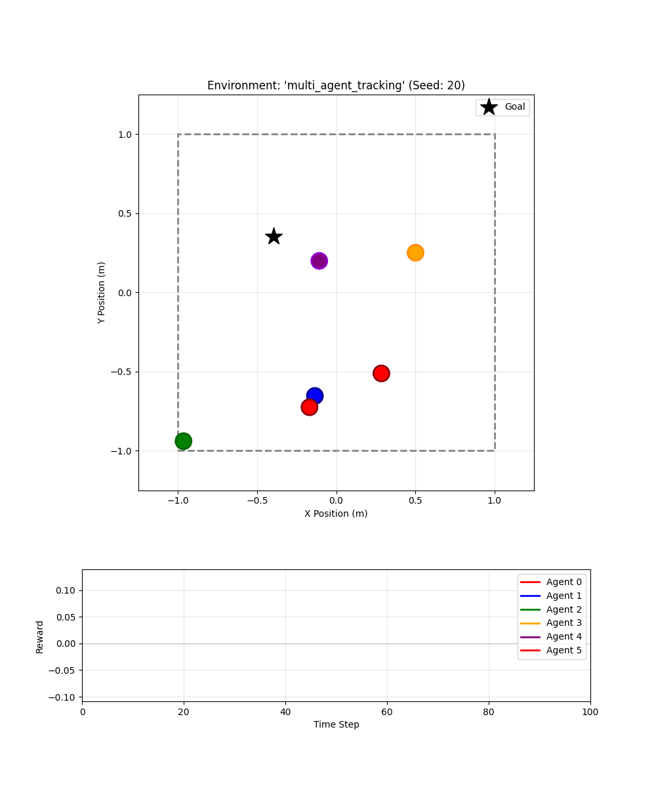

Spent the last couple of weeks writing MAX, a reinforcement learning library in JAX. My goal was to learn more about:
- PPO and model-free RL.
- The right abstractions for multi-agent RL.
- Functional programming and keeping code JIT-friendly.
It’s still super experimental and only has two examples: multi-agent tracking and pursuit-evasion. Both trained with multi-agent PPO. I’ve also written abstractions for model-based RL and adaptation, but that still needs an example.
Might add extra stuff based on research commitments. I’m specifically interested in testing out online adaptation algorithms for both model-based and model-free RL. We shall see what I have time for.
| Pursuit-Evasion | Tracking |
|---|---|
 |  |
This is blogpost 15/100